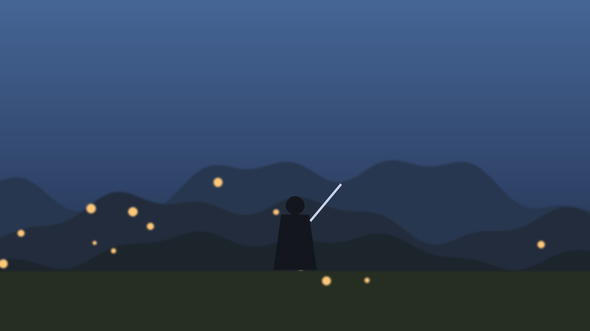
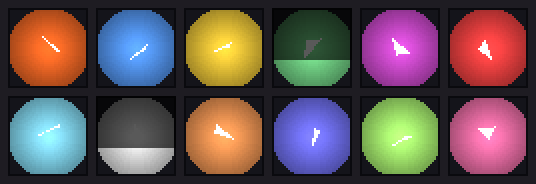
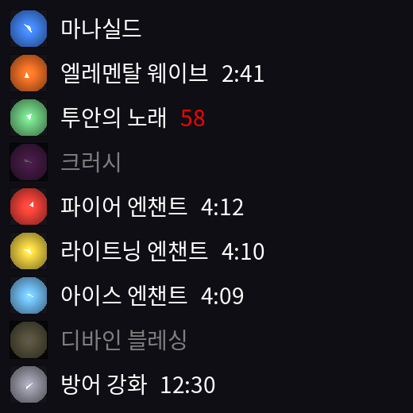
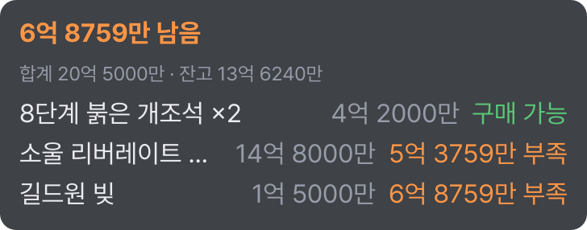
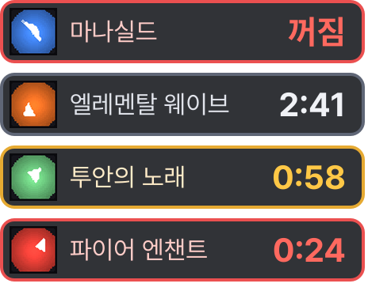
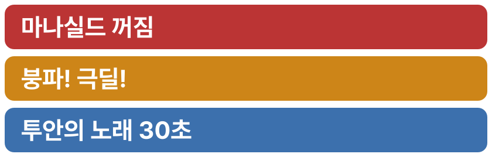
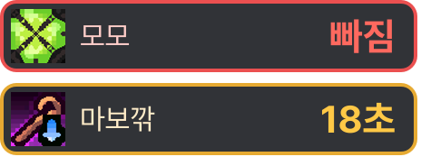
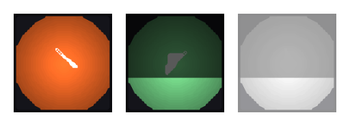
1마비오라는 무엇인가요
마비오라는 화면을 캡처해서 읽기만 하는 트레이 프로그램입니다. 게임 파일이나 메모리를 건드리지 않고, 키 입력을 대신 보내지도 않습니다. 화면에 보이는 것을 읽어 더 크게, 더 눈에 띄게 다시 그려 주고, 필요할 때 소리로 알려 줍니다.
버프 감시
상태창에 고정한 버프가 꺼지거나, 남은 시간이 줄면 카드 · 알림 · 음성으로 알려요.
스킬 표시
스킬창 슬롯을 크게 띄워요. 항상 / 쿨타임 중에만 / 준비되면 흐리게.
보스 디버프
보스 체력바 위 디버프 띠를 읽어 빠진 디버프를 목록으로, 버스트는 순간 알림으로.
자원 · 투아림
생명력 · 마나 · 스태미나 부족, 도르카 · 투아림 시점 알림.
목표 금액
살 물건의 경매장 시세와 은행 잔고를 비교해 "얼마 남았는지" 오버레이로.
스펙업 계산기
내 스펙 · 장비 기준으로 무엇을 올리면 총딜이 몇 % 오르는지, 1억 당 효율 순위와 매물 찾기.
어떻게 동작하나요
- 오버레이는 기본으로 스크린샷 · 방송 캡처에 찍히지 않습니다 (일반 설정에서 바꿀 수 있어요).
- 마비오라가 하는 일은 "화면을 보고 알려 주기"까지입니다. 게임 조작은 항상 직접 하세요.
- 스펙업 · 목표 금액은 화면 캡처와 상관없는 계산 도구라 게임이 꺼져 있어도 쓸 수 있습니다.
켜기 / 끄기 개념
마비오라에는 마스터 스위치 하나가 있습니다. 켜면 감시 · 알림 · 오버레이가 전부 동작하고, 끄면 트레이 아이콘만 남습니다. 보통 던전 들어갈 때 켜고, 나오면 끄는 식으로 씁니다. 트레이 아이콘을 한 번 클릭하면 켜고/끄기가 바뀝니다. 목표 금액 오버레이는 이 스위치와 따로 동작해요.
2설치하기
준비물
| 운영체제 | Windows 10 / 11 (64비트) |
|---|---|
| 파이썬 | 필요 없음 — 압축 안에 실행에 필요한 것이 다 들어 있어요 |
| 화면 | 4K(3840×2160) 권장 · QHD도 UI 100%면 동작. 게임은 창모드 전체화면 |
| 인터넷 | 목표 금액 · 스펙업의 경매장 시세를 받을 때만 (넥슨 Open API 키를 일반 설정에 한 번 입력, 11장) |
1단계 — 압축 파일 받기
배포처에서 mabiaura-v2.0.3.zip 을 받습니다. 브라우저가 "흔하지 않은 파일" 경고를 띄우면 유지를 눌러 저장하세요.
2단계 — 폴더째 압축 풀기
- zip 을 오른쪽 클릭 → 모두 압축 풀기 → 위치를
C:\Games\mabiaura처럼 짧고 한글 없는 경로로. 바탕 화면·다운로드안에 그대로 두어도 되지만, OneDrive 동기화 폴더는 피하세요 (설정 저장이 늦어질 수 있어요).- exe 하나만 따로 꺼내 옮기면 실행되지 않습니다. 바로가기가 필요하면 exe 오른쪽 클릭 → 바로 가기 만들기.
3단계 — 처음 실행 (Windows 보안 경고)
서명되지 않은 개인 제작 프로그램이라 처음 실행할 때 Windows 가 파란 경고 창을 띄울 수 있습니다.
Windows의 PC 보호
앱: mabiaura.exe
게시자: 알 수 없는 게시자
- 1추가 정보 글자를 누릅니다.
- 2나타난 실행 버튼을 누릅니다. 한 번만 하면 다음부터는 안 물어요.
4단계 — 실행 확인
실행하면 홈 창이 뜨고, 작업 표시줄 오른쪽 아래(시계 옆)에 아이콘이 생깁니다. 아이콘이 안 보이면 ^ (숨겨진 아이콘 표시) 안에 있어요. 끌어서 작업 표시줄에 꺼내 두면 편합니다.
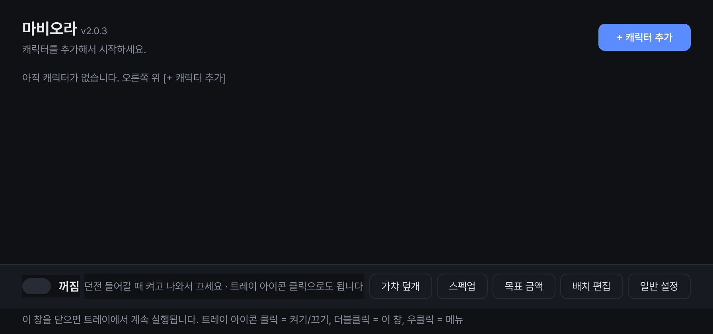
1- 1처음엔 캐릭터가 없어요. + 캐릭터 추가로 시작합니다 (4장).
업데이트 · 삭제
- 업데이트: 마비오라를 종료(트레이 우클릭 → 종료)하고, 새 zip 을 같은 폴더에 덮어쓰기로 풀면 됩니다.
profiles폴더(설정)는 그대로 남아요. - 설정 백업:
profiles폴더만 복사해 두면 됩니다. 다른 PC 로 옮길 때도 이 폴더를 같은 자리에 넣으세요. - 삭제: 종료한 뒤 mabiaura 폴더를 통째로 지우면 끝입니다. 레지스트리나 다른 곳에 남기는 것이 없어요.
3게임 쪽 준비
마비오라는 화면의 글자 · 아이콘 모양으로 읽기 때문에 게임 설정이 맞아야 정확합니다. 한 번만 맞춰 두면 됩니다.
| 화면 모드 | 창모드 전체화면 (테두리 없는 창). 전체화면(독점)은 캡처가 안 될 수 있어요. |
|---|---|
| UI 크기 | 기본(변경 없음)을 권장. 4K 에서 UI 150% 를 쓰면 마비오라 일반 설정 → UI 크기 변경도 같은 것으로 (마비옛체/나눔고딕 구분). |
| 상태창 | 감시할 버프를 상태창에서 고정(핀) 해 두세요. 마비오라는 고정된 버프 목록만 읽습니다. |
| 창 위치 | 상태창 · 추가 스킬바 · 도르카(투아림)는 게임에서 자유롭게 옮길 수 있어요. 원하는 자리에 둔 뒤 영역을 지정하고, 나중에 옮겼다면 그 영역만 다시 지정하세요 (상태창은 레이아웃 다시, 스킬창은 다시 지정). 보스 바(가운데 아래)와 자원 막대(메뉴 바 옆)는 자리가 정해져 있어요. |
| 윈도우 HDR | 켜도 · 꺼도 됩니다. 마비오라가 자동으로 감지해요 (일반 설정 → 윈도우 HDR = 자동 감지). |
영역을 잡기 좋은 순간
- 시간이 표시되는 버프 하나를 켜 둔 상태 — 마비오라가 시간 글자 위치까지 함께 배워요.
- 어두운 곳 — 밝은 배경(눈밭, 하늘)에서는 꺼진 버프의 회색 글자를 배경과 구분하지 못해 일부 줄을 판정 못 할 수 있어요. 던전 안 · 밤 · 실내가 좋습니다.
- 캐릭터가 한 자리에 가만히 있는 순간 (이펙트가 상태창을 덮지 않게).
4처음 10분 — 빠른 시작
버프 하나가 꺼졌을 때 화면에 카드가 뜨고 소리가 나게 하기까지의 순서입니다.
캐릭터 추가
홈 오른쪽 위 + 캐릭터 추가 → 이름 입력 (아무거나). 캐릭터마다 상태창 구성이 달라서 따로 저장해요.
상태창 영역 설정
게임을 앞에 띄운 채 홈의 상태창 → 영역 설정. 화면이 어두워지면 상태창을 넉넉히 드래그 → 초록 상자가 줄마다 뜨면 Enter.
레이아웃 확인
저장하면 자동으로 줄 좌표를 잡아요. 캐릭터 카드에 ✓ 레이아웃 (N행)이 보이면 성공.
감시 항목
감시 항목에서 줄마다 이름을 적고 감시를 켭니다. 설정에서 알림 방식 · 소리 · 화면에 크게 표시.
배치 편집
홈 아래 배치 편집 → 게임 위 점선 상자를 원하는 자리로 끌고, 휠로 크기. 저장.
켜기
홈 아래 스위치 또는 트레이 아이콘 클릭. 켜짐 — 감시 중이면 끝!
5홈 화면과 트레이 아이콘
모든 설정은 홈에서 시작합니다. 캐릭터마다 카드가 하나씩 있고, 카드 안에서 그 캐릭터의 영역 · 감시 · 알림을 설정해요.
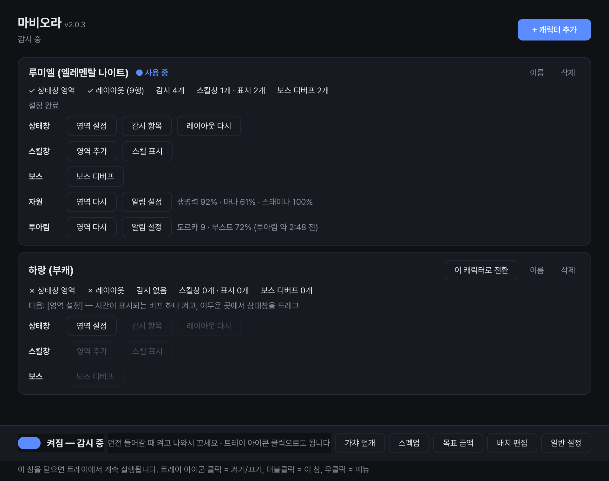
123456789101112131415- 1+ 캐릭터 추가 — 새 캐릭터 카드를 만듭니다.
- 2● 사용 중 — 지금 감시하는 캐릭터. 다른 캐릭터로 접속했다면 그 카드의 [이 캐릭터로 전환] (자동 인식은 없어요).
- 3상태창 영역 설정 — 상태창(고정 버프 목록) 위치를 드래그로 지정 (6장).
- 4감시 항목 — 줄마다 이름 · 알림 방식 · 소리.
- 5레이아웃 다시 — 상태창을 옮겼거나 고정 목록을 바꿨을 때. 어두운 곳에서.
- 6스킬창 영역 추가 / 스킬 표시 — 7장.
- 7보스 디버프 — 8장.
- 8자원 · 투아림 — 영역 지정 후 [알림 설정]. 오른쪽 회색 글자는 지금 읽은 값.
- 9이 캐릭터로 전환 — 다른 캐릭터로 바꿀 때.
- 10마스터 스위치 — 켜짐 = 감시 · 알림 · 오버레이 동작.
- 11가챠 덮개 — 13장.
- 12스펙업 — 12장.
- 13목표 금액 — 11장.
- 14배치 편집 — 10장.
- 15일반 설정 — 13장.
트레이 아이콘
| 왼쪽 클릭 | 켜기 ↔ 끄기 |
|---|---|
| 더블클릭 | 홈 창 열기 |
| 오른쪽 클릭 | 메뉴 (왼쪽 그림) |
| 마우스 올리기 | "마비오라 2.0.3" 버전 표시 |
홈 창의 X 를 눌러도 프로그램은 트레이에서 계속 실행됩니다. 완전히 끄려면 메뉴의 종료.
단축키(선택): 일반 설정에서 켜면 기본 F9 켜기/끄기, F10 홈, Ctrl+F10 배치 편집. 키를 가로채지 않으니 게임에서 안 쓰는 키로 고르세요.
캐릭터를 여러 개 쓸 때
- 캐릭터마다 상태창 · 스킬창 영역, 감시 항목, 보스 디버프 감시, 자원 · 투아림 알림이 따로 저장됩니다.
- 보스 디버프 아이콘 이름은 모든 캐릭터가 함께 씁니다 (한 번 이름 붙이면 끝).
- 오버레이 위치(배치 편집)는 공통입니다.
- 다른 캐릭터로 접속했는데 전환을 잊으면 홈에 "⚠ 상태창 항목이 변경되었습니다"가 떠요. 맞는 캐릭터 카드에서 이 캐릭터로 전환.
6버프 감시 (상태창)
6-1. 상태창 영역 설정
홈 → 캐릭터 카드 → 상태창 · 영역 설정을 누르면 게임 화면 위에 반투명한 막이 덮입니다.
- 1상태창 고정 목록을 넉넉하게 감싸도록 드래그합니다. 좌우 폭은 자동으로 맞춰져요 (너무 넓게 잡으면 바깥 밝은 배경을 글자로 착각할 수 있으니 패널 폭 정도로).
- 2줄마다 초록 상자가 생기고 위에 "행 N개 … 시간 글자까지 포함"이 뜨면 Enter 로 저장.
- 3"⚠ 시간 글자가 안 보임"이면 시간이 표시되는 버프를 하나 켜고 R 로 다시. Esc = 취소.
- 4"행 간격이 … UI 크기가 다릅니다"면 일반 설정의 UI 크기 변경을 게임과 같게 바꾸고 다시 하세요.
6-2. 감시 항목
홈 → 감시 항목. 고정한 버프가 줄마다 화면에서 잘라 온 그림으로 보입니다. 감시할 줄을 켜고 이름을 붙이세요.
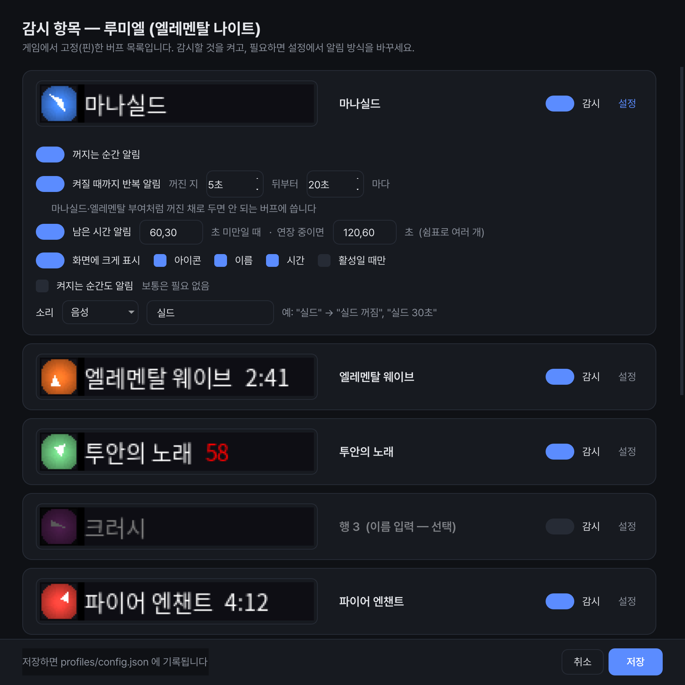
1234567810- 1이름 — 알림 · 카드에 쓸 이름. 비워 두면 '행 N'.
- 2감시 — 켜야 알림 · 표시 대상이 됩니다.
- 3설정 — 눌러서 아래 상세 설정을 펼칩니다.
- 4꺼지는 순간 알림 — 켜져 있다가 꺼질 때 1번.
- 5켜질 때까지 반복 알림 — 꺼진 지 N초 뒤부터 M초마다 '켜세요'. 마나실드처럼 꺼져 있으면 안 되는 버프에.
- 6남은 시간 알림 — '60,30' = 60초 · 30초 미만이 될 때. 연장된 버프는 따로 '120,60' 처럼.
- 7화면에 크게 표시 — 카드(또는 확대)로 띄움. 아이콘 · 이름 · 시간 · 활성일 때만 선택.
- 8소리 — 음성 / 효과음 / 소리 없음. 음성은 부를 이름을 따로 적을 수 있어요 ('실드' → "실드 꺼짐").
- 9크게 표시 방식 (창 아래쪽 '공통' 칸) — 카드(권장): 적은 이름 + 남은 시간을 새로 그림. 화면 그대로 확대: 게임 글자를 그대로 키움.
- 10저장 — 저장해야 적용됩니다.
6-3. 결과 — 버프 카드와 알림
| 빨강 | 꺼짐 · 30초 이하 |
|---|---|
| 주황 | 60초 이하 |
| 흰 글자 | 여유 있음 |
| 초록 | 시간 없는 버프가 켜져 있음 |
- 버프 카드: 고른 버프가 한 창에 세로로 쌓입니다. 아이콘만 화면에서 잘라 선명하게 키우고, 이름과 시간은 새로 그려서 작은 글꼴도 또렷해요.
- 알림창: "마나실드 꺼짐", "투안의 노래 30초" 같은 문구가 몇 초 동안 떴다가 사라집니다. 보스 버스트 · 자원 알림도 여기 같이 떠요.
- 이펙트가 상태창 글자를 덮는 순간은 "모름"으로 두고 추정 타이머가 이어서 셉니다. 잠깐 가려져도 알림이 흔들리지 않아요.
- 게임 창이 뒤로 가면(알트탭) 오버레이가 숨고 읽기도 쉽니다. 시간은 계속 흐르는 것으로 계산해요.
6-4. 이름 뒤에 붙는 글자 (연장)
"투안의 노래 (연장)"처럼 버프 이름 뒤에 글자가 붙는 경우 마비오라가 자동으로 모아 둡니다. 감시 항목의 해당 줄 설정에서 연장으로 취급을 체크하면 그때는 '연장 중이면' 임계값(예: 120,60)을 씁니다. 같은 글자는 모든 버프에 공통 적용돼요.
7스킬 표시
스킬창(단축 슬롯) 아이콘을 원하는 자리에 크게 띄웁니다. 쿨타임이 도는 동안 아이콘 위가 어두워지는 모습까지 그대로 보여요.
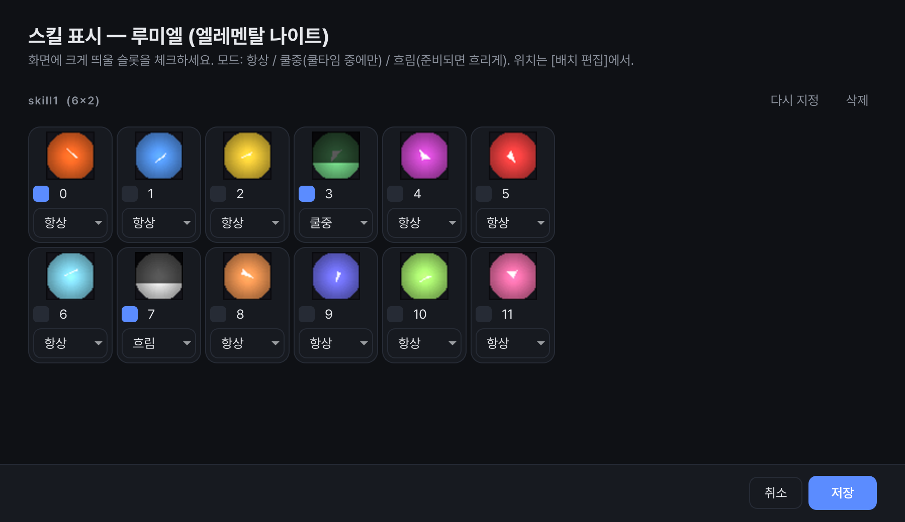
1234- 1다시 지정 — 스킬창을 옮겼을 때. 고른 슬롯 설정은 그대로 남아요. 영역은 여러 개 추가할 수 있어요.
- 2체크 — 크게 띄울 슬롯.
- 3모드 — 항상: 늘 표시 · 쿨중: 쿨타임 중에만 · 흐림: 늘 표시하되 준비되면 흐리게.
- 4저장. 위치 · 크기는 배치 편집에서.
8보스 디버프
보스 체력바 위의 디버프 아이콘 띠를 읽습니다. 우리 파티가 걸어 둬야 하는 디버프(모모 · 방깎 등) 중 빠진 것을 목록으로 띄우고, 붕파 같은 버스트는 걸리는 순간 알림을 줍니다. 띠가 없는 옛 보스에서는 자동으로 쉬어요.
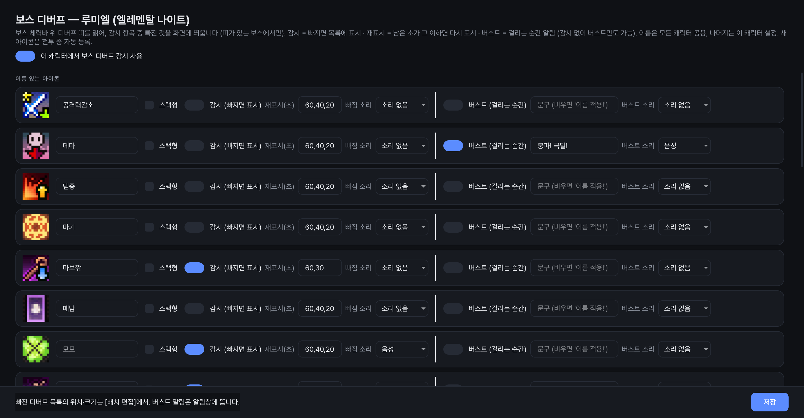
12345678- 1이 캐릭터에서 보스 디버프 감시 사용 — 기능 전체 켜기/끄기.
- 2이름 — 아이콘 이름 (모든 캐릭터 공용). 같은 이름을 주면 한 항목으로 묶여요.
- 3감시 (빠지면 표시) — 이 디버프가 빠지면 목록에 표시.
- 4재표시(초) — '60,40,20' 이면 남은 시간이 그 이하로 떨어질 때 다시 표시(주황). 비우면 빠졌을 때만.
- 5빠짐 소리 — 음성이면 "모모 빠짐", "모모 20초".
- 6버스트 — 걸리는 순간 알림창에 문구. 감시 없이 버스트만 켜도 돼요 (지속 10초짜리에 적합).
- 7버스트 문구 — 비우면 '이름 적용!'.
- 8스택형 — 숫자만 바뀌는 변형(1~5 스택)을 같은 아이콘으로 봄.
보스 디버프 동작 규칙
- 보스 바는 게임 화면 가운데 아래(메뉴 바 바로 위)에 고정이라 따로 영역을 지정할 필요가 없어요.
- 목록은 보스 바가 보이는 동안만 표시됩니다. 감시 중인 디버프가 전부 걸려 있으면 아무것도 안 보여요 (= 잘 되고 있다는 뜻).
- 보스마다 첫 전투에서는 첫 디버프가 걸린 뒤부터 동작하고, 그 보스를 기억해 두면 다음부터는 바가 뜨는 즉시 동작합니다.
- 남은 시간이 분 단위(
4M)로 보이는 동안은 초를 알 수 없어서, 재표시는 60초 이하로 내려온 뒤부터 동작해요. - UI 150% 는 마비옛체만 지원합니다 (나눔고딕은 게임이 분 표시 'M' 을 그리지 않아 분 · 초를 구분할 수 없음).
- 새 아이콘은 기본으로 자동 등록하지 않습니다. 목록에 없는 디버프가 있으면 진단 프레임과 함께 알려 주세요 (15장).
추천 설정 예
| 디버프 | 감시 | 재표시 | 버스트 | 쓰임 |
|---|---|---|---|---|
| 모모 · 방깎 · 마보깎 (오래 유지) | ✓ | 60,30 | 빠지거나 30초 남으면 다시 걸기 | |
| 붕파 (짧은 극딜 창) | ✓ "붕파! 극딜!" | 걸리는 순간 몰아치기 | ||
| 데마 · 뎀증 | ✓ | 20 | 끝나기 직전에만 알림 |
9자원 알림 · 투아림
9-1. 생명력 · 마나 · 스태미나
메뉴 바 옆 막대 세 줄의 색이 찬 비율로 남은 양을 잽니다 (숫자를 읽지 않아 해상도 · 글꼴과 무관). 홈 카드의 자원 · 영역 설정에서 막대 세 줄을 감싸게 드래그하고 Enter, 그다음 알림 설정.
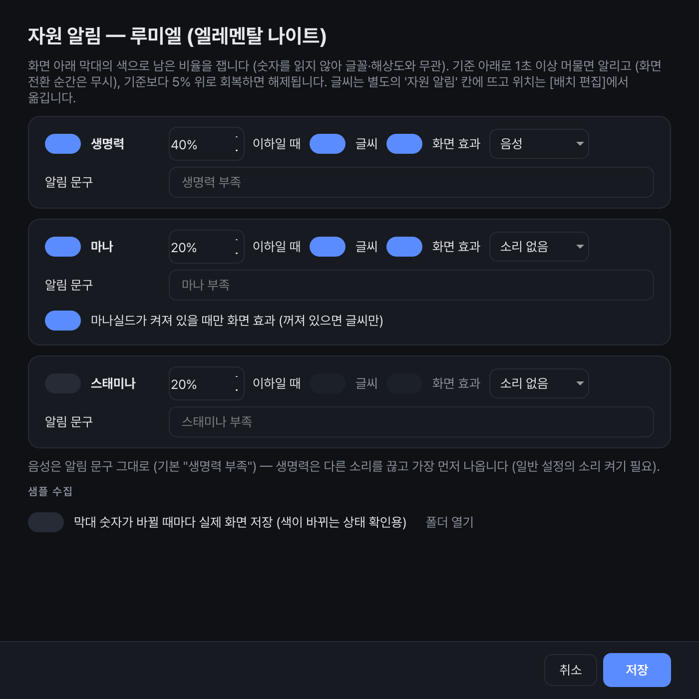
12345678- 1켜기 — 생명력 / 마나 / 스태미나 따로.
- 2기준 % — 이 아래로 1초 이상 머물면 알림. 기준보다 조금 위로 회복하면 해제.
- 3글씨 — 자원 알림 칸에 '마나 18%'.
- 4화면 효과 — 화면 가장자리가 자원 색으로 물듦. 기준의 절반 이하면 진하게.
- 5소리 — 생명력 음성은 다른 소리를 끊고 가장 먼저.
- 6알림 문구 — 비우면 '생명력 부족' 등.
- 7마나실드가 켜져 있을 때만 화면 효과 — 감시 항목에 마나실드가 있을 때.
- 8샘플 수집 — 문제 확인용. 평소엔 끄세요.
화면 효과와 글씨는 따로 체크해요. 둘 다 / 하나만 / 둘 다 끔 모두 가능합니다. 화면 효과는 인식 영역(막대 · 상태창 등)은 비워 두고 칠해서, 효과 색 때문에 잘못 읽는 일이 없어요.
9-2. 투아림 (도르카)
도르카 숫자와 부스트 %를 읽어 알려 줍니다. 부스트는 전투 600초면 100% (1% = 6초)라서, 남은 시간은 "전투가 계속 이어진다"는 가정의 예측이에요. 홈 카드의 투아림 · 영역 설정에서 도르카 숫자와 % 를 감싸게 드래그 (두 자리 · 100% 가 돼도 잘리지 않게 조금 넉넉히).
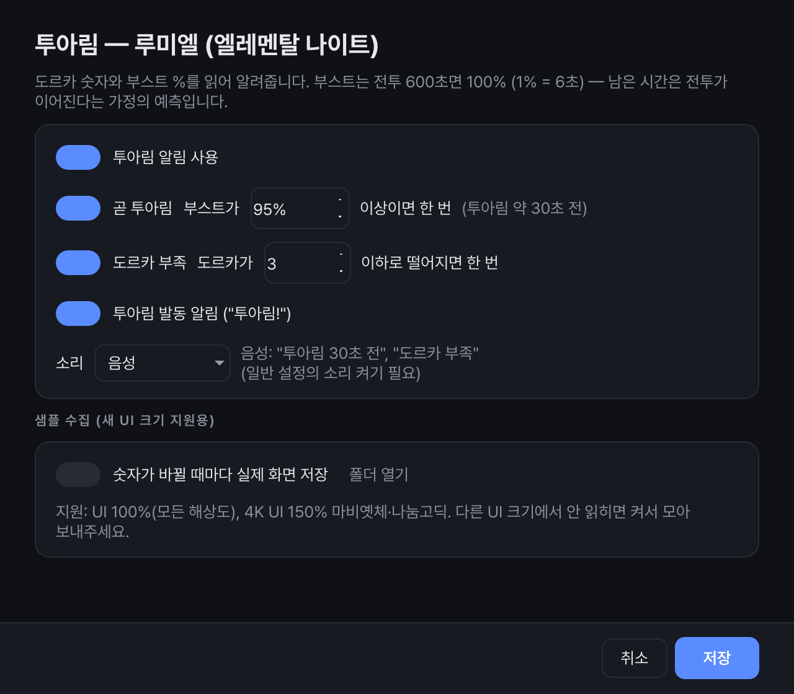
123456- 1투아림 알림 사용.
- 2곧 투아림 — 부스트가 N% 이상이면 한 번 (옆에 '투아림 약 0:30 전' 계산).
- 3도르카 부족 — N개 이하로 떨어지면 한 번.
- 4투아림 발동 알림 — "투아림!".
- 5소리 — 음성: "투아림 30초 전", "도르카 부족".
- 6샘플 수집 — 지원하지 않는 UI 크기에서 안 읽힐 때 켜서 모아 보내 주세요.
10배치 편집
홈 아래 배치 편집(또는 트레이 메뉴 · Ctrl+F10)을 누르면 모든 오버레이가 파란 점선 상자로 바뀌고 작은 편집 창이 뜹니다. 알림창에는 "(예시)" 문구가 계속 떠서 위치를 보기 쉬워요.
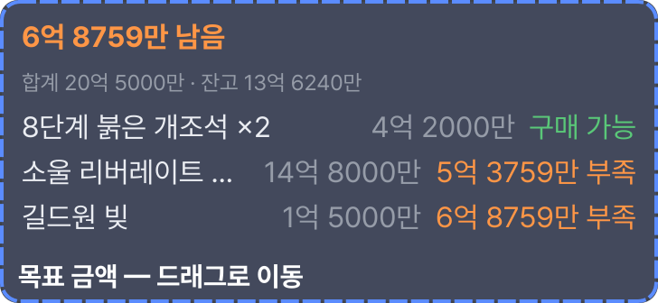
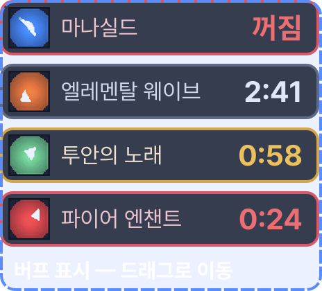
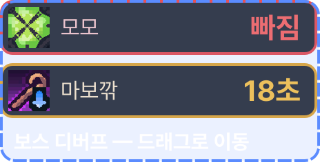
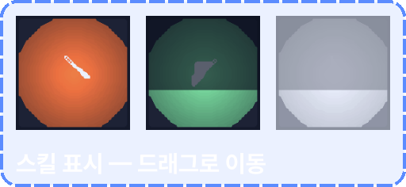
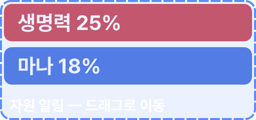
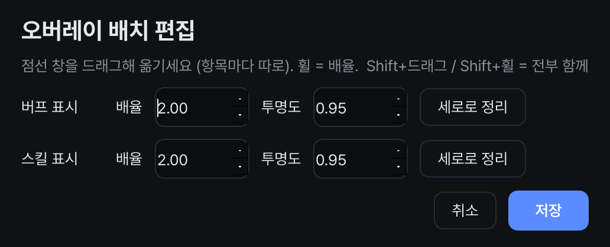
| 드래그 | 그 상자만 옮기기 |
|---|---|
| 휠 | 그 상자 크기(배율) — 목표 금액은 글자 크기 |
| Shift + 드래그 / 휠 | 모든 상자를 함께 옮기기 / 함께 키우기 |
| 편집 창 · 배율 · 투명도 | 버프 표시 · 스킬 표시 전체의 크기와 투명도 |
| 세로로 정리 | 흩어진 확대 아이콘을 한 줄로 세움 |
| 저장 / 취소 | 저장해야 위치가 남아요. 취소하면 편집 전 자리로 |
11목표 금액 (경매장 시세 · 은행 잔고)
사고 싶은 물건(경매장 시세 자동) · 갚을 빚 · 모을 금액을 적어 두면 은행 잔고와 비교해 얼마 남았는지를 오버레이로 보여 줍니다. 위 항목부터 잔고를 채워 각 항목이 '구매 가능'인지, 거기까지 사려면 얼마가 부족한지 알려 줘요. 마스터 스위치와 상관없이 동작합니다.
11-1. 넥슨 Open API 키 받기 (시세용, 무료)
- 브라우저에서 openapi.nexon.com 에 넥슨 계정으로 로그인합니다.
- 애플리케이션 등록 → 게임은 마비노기, 이름은 아무거나(예: 마비오라) → 등록.
- 발급된 키(
live_…또는test_…)를 복사해 홈 → 일반 설정 → 넥슨 Open API → API 키 칸에 붙여 넣고 저장합니다.
profiles\config.json 에만 저장돼요.
개발 단계 키는 하루 1000회 호출 한도가 있어 마비오라가 두 기능의 호출 수를 합쳐 세고, 한도 50회 전에 자동 조회를 멈춥니다 (한도는 일반 설정에서 바꿀 수 있어요). 경매장 정보는 실제보다 평균 10분쯤 늦어요. 키가 없어도 버프 감시 등 다른 기능에는 문제가 없습니다.11-2. 은행 잔고 읽기 (선택)
경매장 창을 연 채로 두 곳을 지정하면, 이후 경매장 창을 열 때마다 잔액을 읽어 갱신합니다.
- ① 창 제목 지정: 창이 열렸는지 알고, 창을 옮겨도 잔액 칸을 따라가는 기준점입니다. "화면에서 이 자리 하나만 찾아짐"이 떠야 좋아요.
- ② 잔액 칸 지정: 금액이 길어져도 잘리지 않게 칸 전체를. 같은 값을 3번 연속 읽어야 반영합니다(잘못 읽기 방지).
- 못 읽는 숫자가 있으면 창의 화면 금액 알려주기에 지금 보이는 잔액을 그대로 적고 배우기 → 다음부터 읽어요.
11-3. 목록 만들기
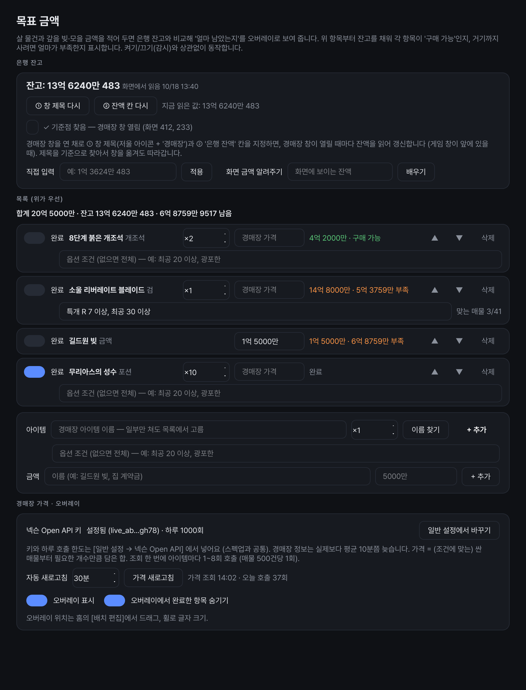
1234567891011121314- 1잔고 — 화면에서 읽은 값 / 직접 입력한 값과 시각.
- 2① 창 제목 지정 / 다시.
- 3② 잔액 칸 지정 / 다시. 오른쪽에 지금 읽은 값.
- 4직접 입력 — '1억 3624만 483' 처럼 써도 됩니다.
- 5화면 금액 알려주기 — 못 읽을 때 글자 배우기.
- 6개수 — 싼 매물부터 개수만큼 담은 합이 가격.
- 7옵션 조건 — 맞는 매물만 가격에. 오른쪽 '맞는 매물 3/41'.
- 8완료 — 샀거나 갚은 항목은 합계에서 빠짐.
- 9아이템 추가 — 일부만 쳐도 목록에서 고를 수 있어요.
- 10이름 찾기 — 정확한 이름을 모를 때 (사전 → 없으면 경매장 1회 호출).
- 11금액 추가 — 빚 · 계약금처럼 고정 금액.
- 12API 키 상태 — 설정됨 / 없음. 키는 [일반 설정에서 바꾸기]로.
- 13자동 새로고침 — N분마다 가격 다시 (0 = 끔).
- 14오버레이 표시 · 완료 항목 숨기기.
11-4. 옵션 조건 쓰는 법
쉼표로 여러 개를 쓰면 모두 만족하는 매물만 가격에 들어갑니다. 입력하는 동안 그 아이템에 실제로 있는 옵션 이름이 자동완성으로 떠요.
| 쓰는 법 | 뜻 |
|---|---|
최공 20 이상 | 최대 공격력(세공 · 옵션) 20 이상 |
최공 18~20 / 최공 20 이하 | 범위 / 이하 |
세공 랜스 차지 7 | 세공 '랜스 차지' 레벨 7 이상 |
광포한 | 인챈트 이름(접두 · 접미)이 '광포한' |
특개 S 6 이상 | 특별 개조 S 6단계 이상 |
파트 A R 250 이상 | 아이템 색상 파트 A 의 R 값 |
줄임말: 최공 · 최대공 · 최소공 · 마공 · 크뎀 · 크리 · 밸런 · 공속 · 이속 · 캐속 · 쿨감 · 최생 · 최마 · 최스 · 마방 · 마보 · 에코 · 각성 · 고유 · 토템 · 유물 · 세트 · 장인 · 특개 · 의장 · 색
11-5. 오버레이
- 맨 위 "6억 8759만 남음"이 가장 크게 — 전부 사려면 부족한 금액. 다 살 수 있으면 초록 "모두 구매 가능".
- 항목마다 가격과 구매 가능 / N 부족.
- 위치는 배치 편집에서 드래그, 휠로 글자 크기.
12스펙업 계산기
내 캐릭터 정보와 장비를 넣으면 무엇을 올리면 총딜이 몇 % 오르는지, 그리고 1억 골드 당 몇 % 인지로 순위를 매겨 줍니다. 홈 아래 스펙업 버튼(또는 트레이 메뉴)으로 열어요. 게임이 꺼져 있어도 됩니다.
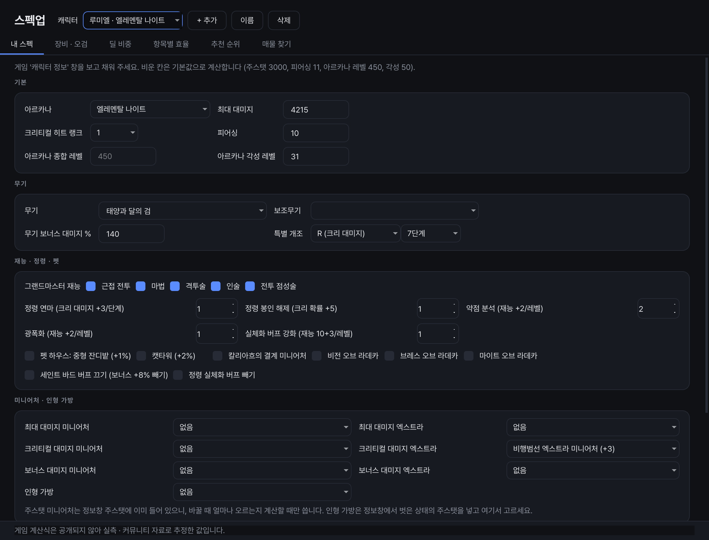
123- 1캐릭터 — 최대 3명. 홈의 캐릭터와는 별개입니다.
- 2+ 추가 · 이름 · 삭제.
- 3탭 — 왼쪽 세 개는 입력, 오른쪽 세 개는 결과.
12-1. 내 스펙 — 무엇을 넣나요
| 칸 | 넣을 값 |
|---|---|
| 아르카나 · 최대 대미지 · 피어싱 | 캐릭터 정보창 그대로 (마법 아르카나는 마법 공격력, 연금은 연금술 대미지) |
| 크리티컬 히트 랭크 · 종합/각성 레벨 | 정보창 · 아르카나 창 |
| 무기 · 보조무기 · 무기 보너스 % · 특별 개조 | 지금 든 무기. 특별 개조는 R/S 와 단계 |
| 재능 · 정령 · 펫 | 그랜드마스터 재능 체크, 정령 연마 · 봉인 해제 단계, 펫 하우스 등 |
| 미니어처 · 인형 가방 | 지금 쓰는 것. 주스탯 미니어처는 이미 정보창에 들어 있어 '바꿀 때 차이'에만 써요 |
| 아르카나 전용 | 연금 4속성 · 마리오네트 최대 대미지 · 세이크리드 방어 등 (해당 아르카나만 보임) |
| 토템 · 주화 · 타이틀 | 애뮬릿/에린 사전 토템, 알반 토템, 브리레흐의 주화, 지금 단 1차 · 2차 타이틀 |
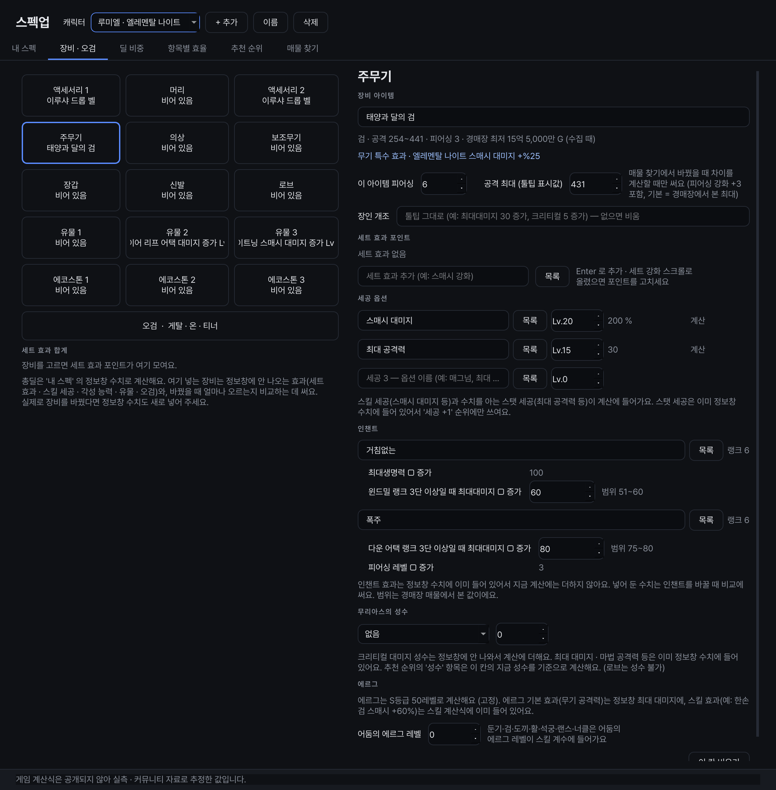
1234567891011- 1부위 칸 — 눌러서 오른쪽에서 편집. 액세서리 · 머리 · 의상 · 장갑 · 신발 · 로브 · 무기, 유물 3칸, 에코스톤 3칸.
- 2장비 아이템 — 이름 일부만 쳐도 목록. 고르면 세트 포인트 기본값이 채워져요.
- 3이 아이템 피어싱 — 기본 = 인챈트 포함 최대치 (예: 태양과 달의 검 6, 소울 리버레이트 블레이드 8).
- 4공격 최대 (툴팁 표시값) — 무기 툴팁 '공격 ~ N' 의 N. 개조 · 세공 '최대 공격력'이 이미 들어간 값.
- 5장인 개조 — 툴팁 문구 그대로 (예: 최대대미지 25 증가). 매물과 바꿀 때 빠지는 몫이라 입력하면 비교가 정확해요.
- 6세트 효과 포인트 — 같은 효과 합 10 이상이면 발동.
- 7세공 옵션 3칸 — 이름 · 레벨. [목록]으로 고르기.
- 8인챈트 — 접두 · 접미. 수치 범위는 경매장에서 본 값.
- 9무리아스의 성수 — 크리티컬 대미지 성수만 계산에 더해요.
- 10어둠의 에르그 레벨 — 해당 무기 종류만.
- 11오검 — 5칸.
12-2. 장비 입력 요령
- 세트 효과: 착용 장비 전부의 포인트를 효과별로 더해 10 이상이면 발동. 같은 이름의 세트가 여러 수치로 발동하면 큰 값 하나만 적용돼요 (예: 크리 대미지 7% 와 3% → 7%). 무기 고유 효과는 세트와 별개로 함께 적용됩니다.
- 세트 수치 고르기: 윈드밀 강화처럼 수치가 여러 종류(방어구 30 / 무기 15 …)인 세트는 칸마다 고를 수 있고, 기본은 무기 칸 = 무기 값, 나머지 = 방어구 값.
- 무기 마스터리 세공: 소드 마스터리는 검(한손 · 양손), 블런트 마스터리는 둔기를 들었을 때만 계산합니다. 엘레멘탈 나이트 쌍수는 인간 = 한손 검(소드), 자이언트 = 한손 둔기(블런트).
- 실제로 장비를 바꿨다면 내 스펙 탭의 정보창 수치도 새로 넣어 주세요. 총딜 계산의 기준은 정보창 수치입니다.
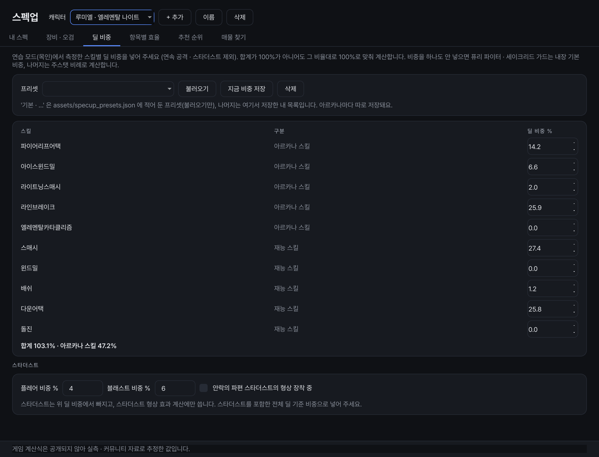
12345- 1불러오기 — 아르카나별 기본 프리셋 또는 내가 저장한 목록.
- 2지금 비중 저장 — 내 목록으로 저장 (아르카나마다 따로).
- 3스킬별 딜 비중 % — 연습 모드(목인)에서 측정한 값.
- 4합계 — 100% 가 아니어도 비율대로 100% 로 맞춰 계산해요.
- 5스타더스트 — 플레어 · 블래스트 비중은 위 합계에서 빠지고 형상 효과 계산에만.
12-4. 항목별 효율 — "어디를 올릴까"
계산 항목마다 한 단계 올리면 과 상한까지 올리면 총딜이 몇 % 오르는지 보여 줍니다. 오른쪽 찾아보기 ▾를 누르면 그 조건으로 매물 찾기 탭으로 넘어가요.
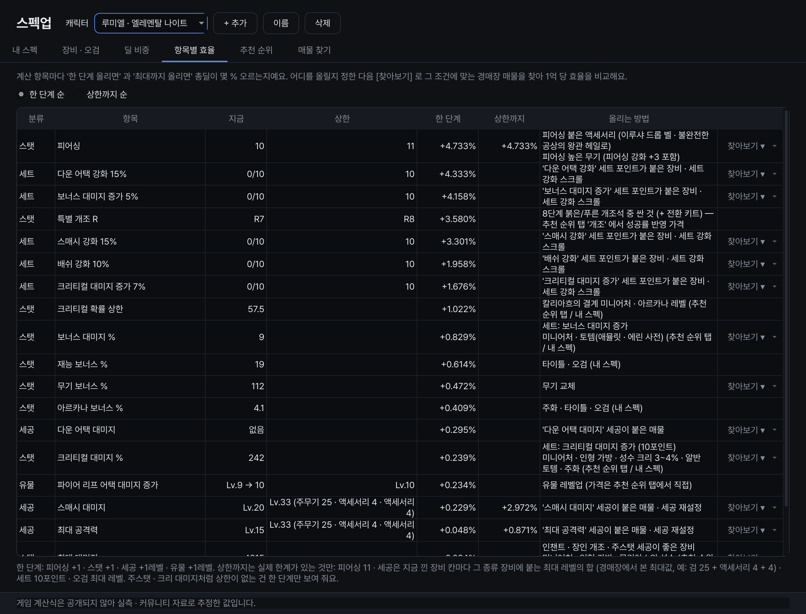
123- 1한 단계 순 — 피어싱 +1 · 스탯 +1 · 세공 +1레벨 · 유물 +1 · 세트 발동.
- 2상한까지 순 — 실제 한계가 있는 것만: 피어싱 11, 세공 = 낀 장비 칸마다 최대 레벨 합 (예: 검 25 + 액세서리 4 + 4), 오검 최대.
- 3표 — 머리글을 누르면 정렬. '올리는 방법'에 어디서 얻는지.
12-5. 추천 순위 — "무엇부터 살까"
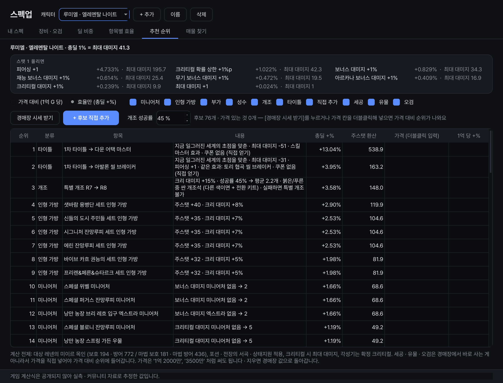
123456- 1스탯 1 올리면 — 총딜 1% = 주스탯 몇인지, 스탯별 환산.
- 2가격 대비 (1억 G 당) / 효율만 (총딜 +%) 정렬 전환.
- 3분류 체크 — 미니어처 · 인형 가방 · 부가 · 성수 · 개조 · 타이틀 · 직접 추가 · 세공 · 유물 · 오검.
- 4경매장 시세 받기 — 후보 이름의 최저가 (일반 설정의 API 키 필요, 30분 캐시).
- 5+ 후보 직접 추가 — 토템 · 주화 · 인챈트처럼 목록에 없는 것은 바뀌는 스탯을 적어 비교.
- 6가격 칸 더블클릭 — 직접 입력 ('1억 2000만', '3500만'). 지우면 경매장 값으로.
- 개조: 특별 개조 7 → 8 만 후보로 둡니다 (7단계까지는 비용이 작아서). 가격 = 8단계 붉은/푸른 개조석 중 싼 것 × (1 / 성공률), 다른 색이면 + 특별 개조 전환 키트. 성공률은 위 개조 성공률 칸 (기본 45%, 이벤트 땐 50%).
- 성수: 지금 성수 → 목표 성수까지 평균 몇 개가 드는지 확률로 계산합니다.
- 타이틀: 1차 · 2차를 하나씩 바꿔 본 결과. 쿠폰 가격이 있으면 가격 대비로도.
- 세공 · 유물 · 오검은 경매장에서 바로 사는 게 아니라서 가격을 직접 넣어야 가격 대비 순위에 들어가요.
12-6. 매물 찾기 — "경매장 매물로 바꾸면"
경매장 카테고리 매물을 전부 받아, 하나하나를 장비 탭의 같은 부위 지금 아이템과 바꿨다고 보고 총딜 변화를 계산합니다. 피어싱 · 주스탯(인챈트 · 장인 개조 · 세공 · 무기 공격) · 세트 · 이 아르카나에 유효한 세공 · 무기 특수 효과를 모두 비교해요.
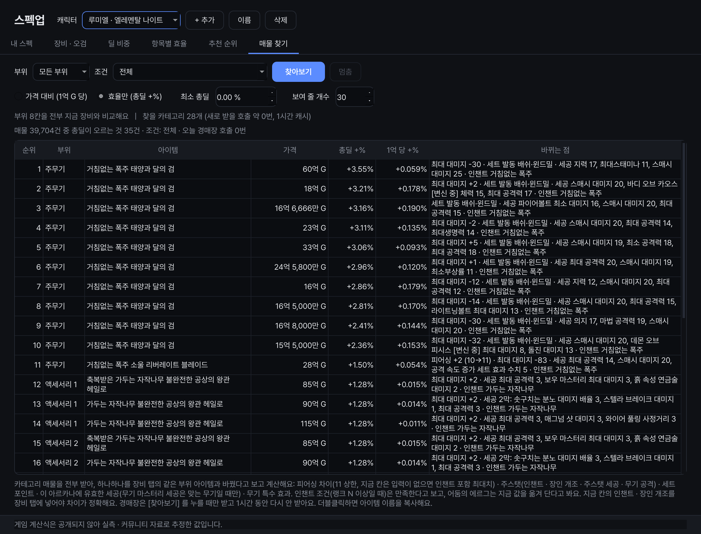
1234567- 1부위 — 기본 '모든 부위' (8칸 전부 비교). 한 부위만 볼 수도 있어요.
- 2조건 — 기본 '전체'. 항목별 효율의 찾아보기로 오면 그 조건이 들어와요.
- 3찾아보기 — 받은 매물은 1시간 동안 다시 안 받아요 (호출 절약).
- 4정렬 — 효율만(총딜 +%) / 가격 대비(1억 당).
- 5최소 총딜 — 이보다 적게 오르는 매물은 숨김.
- 6보여 줄 개수 — 10~50 (기본 30).
- 7결과 — 더블클릭하면 아이템 이름이 복사돼요 → 게임 경매장 검색에 붙여 넣기.
13일반 설정 · 소리 · 가챠 덮개
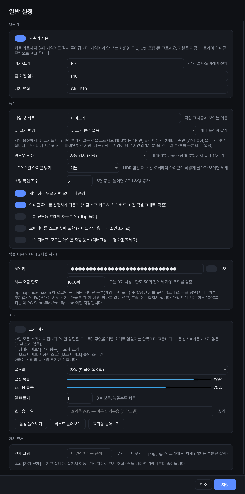
123456789101112131415- 1단축키 사용 — 기본 꺼짐.
- 2단축키 칸 — 클릭 후 키 조합을 누르면 입력. Backspace = 사용 안 함.
- 3게임 창 제목 — 작업 표시줄에 보이는 이름 ('마비노기'). 게임 창을 못 찾을 때 확인.
- 4UI 크기 변경 — 게임 옵션과 같게. 바꾸면 영역 설정을 다시.
- 5윈도우 HDR — 자동 감지 권장.
- 6HDR 스킬 아이콘 밝기 — 스킬 아이콘이 하얗게 보이면 세게.
- 7초당 확인 횟수 — 5면 충분. 높이면 CPU 사용 증가.
- 8문제 진단용 프레임 자동 저장 — 문제 있을 때만 켜기 (15장).
- 9오버레이를 스크린샷에 포함 — 가이드 · 방송용. 평소엔 끄기.
- 10넥슨 Open API 키 — 목표 금액 · 스펙업 공통 (11-1). '보기'로 확인.
- 11하루 호출 한도 — 두 기능 합산. 개발 단계 키는 1000.
- 12소리 켜기 — 끄면 모든 소리 꺼짐 (화면 알림은 그대로).
- 13목소리 · 볼륨 · 빠르기 — 윈도우 한국어 음성 (보통 Heami).
- 14들어보기 — 저장 전 값으로 바로 확인.
- 15가챠 덮개 그림 — png · jpg (비우면 어두운 단색).
소리 정리
무엇을 어떤 소리로 알릴지는 항목마다 고르고(음성 / 효과음 / 소리 없음, 기본 소리 없음), 일반 설정은 전체 켜기와 목소리 · 크기만 정합니다.
| 무엇 | 어디서 고르나 | 음성 예 |
|---|---|---|
| 상태창 버프 | 감시 항목 → 카드의 '소리' | "실드 꺼짐", "투안 30초" |
| 보스 디버프 빠짐 · 재표시 | 보스 디버프 → 빠짐 소리 | "모모 빠짐", "모모 20초" |
| 보스 버스트 | 보스 디버프 → 버스트 소리 | "붕파! 극딜!" (다른 소리를 끊고 바로) |
| 생명력 · 마나 · 스태미나 | 자원 알림 → 소리 | "생명력 부족" (생명력이 가장 먼저) |
| 투아림 | 투아림 → 소리 | "투아림 30초 전", "도르카 부족" |
목록에 한국어 목소리가 없으면 Windows 설정 → 시간 및 언어 → 음성 에서 한국어 음성을 추가하세요.
가챠 덮개
가챠 결과 화면을 가리는 창입니다. 홈의 가챠 덮개를 누르면 뜨고, 다시 누르면 사라집니다(자리 기억).
- 끌기 = 이동, 가장자리 = 크기 조절.
- 휠을 내리면 위에서부터 줄어들어 결과를 조금씩 공개할 수 있어요.
- 그림은 일반 설정 → 덮개 그림 (창 크기에 꽉 차게, 넘치는 부분은 잘림).
14문제 해결
| 증상 | 확인 · 해결 |
|---|---|
| "게임 창을 못 찾음" | 게임을 먼저 켜 두었는지, 일반 설정의 게임 창 제목이 작업 표시줄 이름과 같은지. |
| 영역 설정에서 "행을 못 찾음" | 어두운 곳에서, 상태창 패널 폭에 맞게 다시. UI 크기 설정이 게임과 같은지. |
| "행 간격이 … UI 크기가 다릅니다" | 일반 설정 → UI 크기 변경을 게임 옵션과 같게 → 영역 설정 다시. |
| 홈에 "상태창 항목이 변경됨" | 고정 목록을 바꿨거나 다른 캐릭터. 맞는 캐릭터로 전환하거나 레이아웃 다시. |
| "밝은 곳에서 잡혀 일부 행 판정 못 함" | 어두운 곳에서 레이아웃 다시. |
| 알림이 늦거나 시간이 튐 | 이펙트가 글자를 덮는 순간은 추정 타이머가 메워요. 자주 그러면 진단 프레임을 보내 주세요. |
| 보스 디버프가 안 뜸 | 띠가 없는 보스이거나 그 보스와의 첫 전투(첫 디버프부터 동작). '이 캐릭터에서 보스 디버프 감시 사용'이 켜져 있는지. |
| 오버레이가 안 보임 | 마스터 스위치가 켜졌는지, 게임 창이 앞에 있는지('뒤로 가면 숨김'), 배치 편집으로 위치 확인. |
| 소리가 안 남 | 일반 설정의 소리 켜기 + 항목별 소리가 '소리 없음'이 아닌지. [음성 들어보기]로 확인. |
| 스크린샷 · 방송에 오버레이가 안 찍힘 | 정상입니다(기본). 필요하면 '오버레이를 스크린샷에 포함', OBS 는 디스플레이 캡처로. |
| 경매장 "400 OPENAPI00004" | 경매장에 없는 이름은 자동으로 건너뜁니다. 계속 뜨면 아이템 이름을 [이름 찾기]로 고르세요. |
| 경매장 시세가 안 옴 | 일반 설정의 API 키 · 하루 한도(1000회) 확인. 인터넷 연결. |
| 은행 잔액을 못 읽음 | ① 창 제목 다시 지정, 잔액 칸을 조금 넓게. '화면 금액 알려주기'로 배우기. 밝은 배경 앞이면 경매장 창을 어두운 곳으로. |
| 백신이 exe 를 막음 | PyInstaller 오탐. 폴더를 예외 등록 후 다시 압축 풀기. |
| 갑자기 꺼짐 · 이상 동작 | exe 옆 mabiaura.log 를 보내 주세요. |
15파일 위치 · 업데이트 · 진단 보내기
| 위치 (mabiaura 폴더 안) | 내용 |
|---|---|
mabiaura.exe, _internal\ | 프로그램. 업데이트 때 덮어씀 |
profiles\config.json | 캐릭터 · 영역 · 감시 항목 · 오버레이 위치 · 일반 설정 · API 키 |
profiles\goal.json | 목표 금액 목록 · 잔액 영역 |
profiles\specup.json | 스펙업 캐릭터 · 장비 · 가격 |
profiles\specup_market\ | 매물 찾기 경매장 캐시 (1시간) |
diag\ | 진단 프레임 · 샘플 수집 |
mabiaura.log | 실행 기록 |
문제를 알릴 때 보내 주면 좋은 것
- 일반 설정 → 문제 진단용 프레임 자동 저장을 켜고 문제가 생기는 상황을 재현합니다.
diag폴더의 png 들과mabiaura.log를 압축해서 보냅니다.- 무엇을 했고 무엇이 기대와 달랐는지 한두 줄로 (예: "던전 보스방에서 마나실드가 켜져 있는데 꺼짐 알림").
즐거운 모험 되세요!